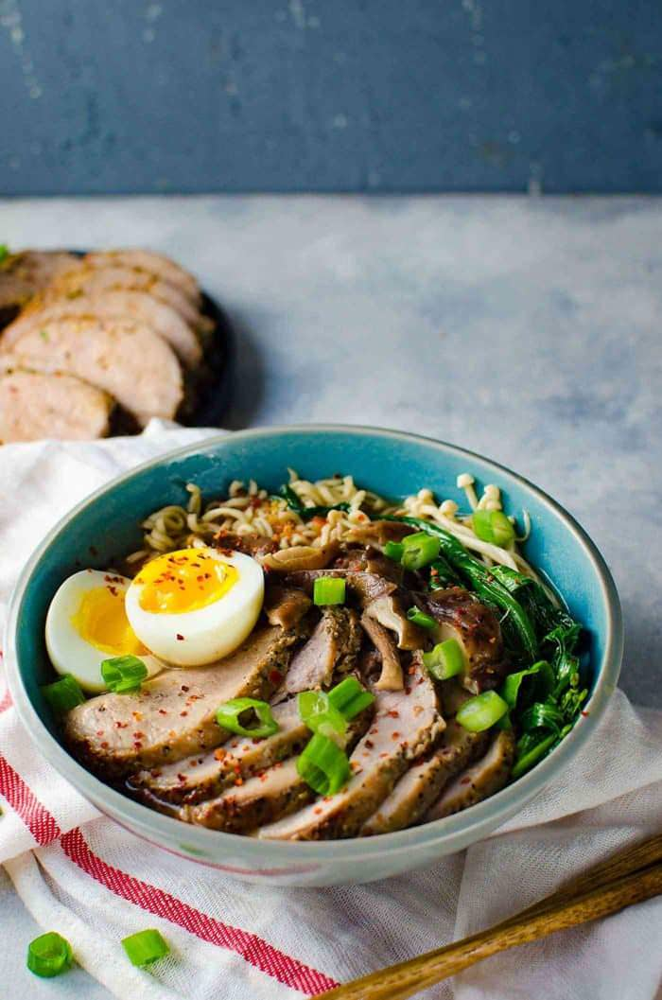

ramen

Ramen is a Japanese noodle soup. It consists of Chinese-style wheat noodles served in a meat or (occasionally) fish-based broth,
often flavored with soy sauce or miso, and uses toppings such as sliced pork, dried seaweed, menma, and scallions.
ingredients
- 1 package ramen noodles
- 1 tablespoon vegetable oil
- 1 onion, chopped
- 2 cloves garlic, minced
- 1 teaspoon ginger, minced
- 4 cups chicken broth
- 1 tablespoon soy sauce
- 1 teaspoon sesame oil
- 1/2 teaspoon black pepper
- Your favorite toppings, such as sliced pork, eggs, green onions, etc.
how to make
- Cook the ramen noodles according to the package directions.
- While the noodles are cooking, heat the vegetable oil in a large pot over medium heat. Add the onion, garlic, and ginger and cook until softened, about 5 minutes.
- Add the chicken broth, soy sauce, sesame oil, and black pepper to the pot. Bring to a boil, then reduce heat to low and simmer for 10 minutes.
- Add the cooked ramen noodles to the pot and stir to combine.
- Top with your favorite toppings and serve.
home